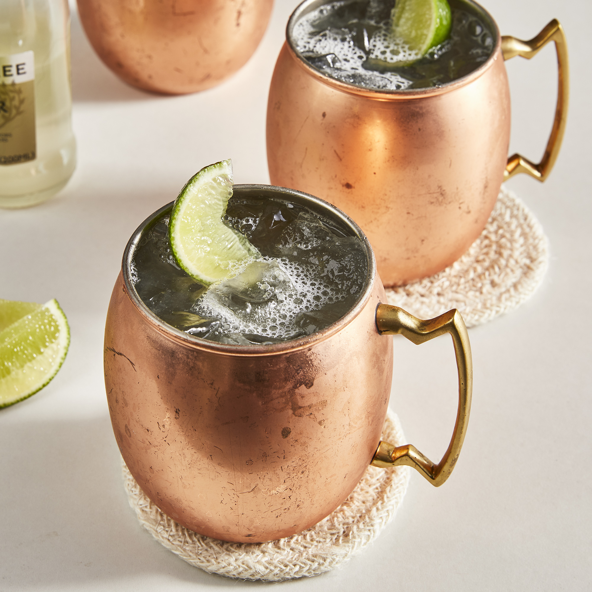

Moscow Mule

Ingridients
- Ice cubes
- 45 ml Absolut Vodka
- 15 ml lime juice
- Ginger Beer
- 1 lime wedge
Steps
- Fill a mule mug with ice cubes
- Add Absolut Vodka and lime juice.
- Top up with ginger beer.
- Garnish with a lime wedge.
Notes & Variations
- For a somewhat more mature and full-bodied version of the Moscow Mule, add a few dashes of aromatic bitters to the drink.
- Make sure to use plenty of ice in the glass. That will keep your drink colder, crisper and fizzier longer.
- If you can’t find Ginger Beer, muddle some fresh ginger in the base of your mule cup and use Ginger Ale instead. That will give you the spicy kick from the fresh ginger.